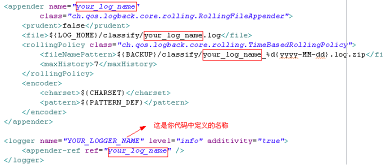
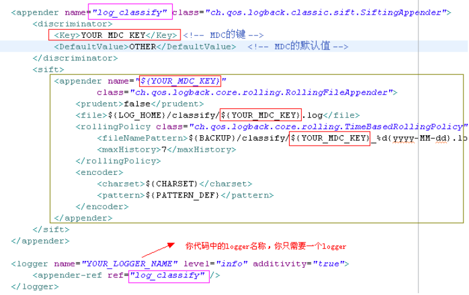

0x00 前言
在阅读本文前，请先保证你熟悉 logback 的配置方式，能够实现 logback 的基本日志配置，并明白你的日志是如何通过你的代码找到应该输出到哪个日志文件的。
否则，请先自学上述内容。因为本文不会提及这些东西，若无上述基础，下面的内容是看不懂的。
0x10 问题背景
无论是 log4j 还是 logback，通常配置日志的顺序都是：
- 在代码中指定唯一的logger名称
- 在日志配置文件通过
<logger>关联该名称 - 在日志配置文件中把
<logger>的日志输出到<append>
换而言之，logger 的名称在开发的时候就需要固定了，后期无论增改 logger 都需要重新编译代码使之生效。
而实际上，经常有多线程（多用户、或多会话等）环境，需要分别打印自身日志到不同的日志文件。
而多线程是无法预测数量的，即 logger 无法分别预设（起码在你未看过这篇文章前是这样）。因此往往的解决办法，要么固定多线程的数量和名字、要么全都打到同一份日志。
这两种做法其实都不理想，其实可以通过利用 MDC 完美解决这个问题。
0x20 MDC介绍
MDC（Mapped Diagnostic Context，映射调试上下文）是 log4j 和 logback 提供的一种方便在多线程条件下记录日志的功能。某些应用程序采用多线程的方式来处理多个用户的请求。在一个用户的使用过程中，可能有多个不同的线程来进行处理。
MDC 可以看成是一个与当前线程绑定的哈希表，可以往其中添加键值对。MDC 中包含的内容可以被同一线程中执行的代码所访问。当前线程的子线程会继承其父线程中的 MDC 的内容。当需要记录日志时，只需要从 MDC 中获取所需的信息即可。MDC 的内容则由程序在适当的时候保存进去。
0x30 实战：应用MDC配置动态日志
0x31 Logback 配置：使用 SiftingAppender 包装你的 Append
在说明 SiftingAppender 之前，先看一个一般的 Append 配置：

通过这个值配置，可以简单地做到把日志输出到【固定名称】的日志文件 your_log_name.log 中。
而要通过MDC动态输出日志到【非固定名称】的日志文件，则需要使用 SiftingAppender 包装你的 Append ：

绿框中的其实就是原本的 Append 部分，区别在于固定名称 your_log_name 被替换成变量 ${YOUR_MDC_KEY}。
实则上 MDC 就是一个 Hash 表，在打印日志前，它会在 Hash 表中找到真正的日志名称，然后替换掉 ${YOUR_MDC_KEY}，从而实现日志动态化。
需要注意的是，SiftingAppender 中定义了 MDC 的参数，其中 <Key> 值虽然可自定义，但是由于用于代码中的 MDC 关联，因此确定后就不能再修改，否则你需要重新编译代码。
而 <DefaultValue> 是当 logback 在 MDC 找不到键所对应的值时，就会把日志输出到 OTHER.log 的意思。除非故意把 <Key> 配成与代码定义的值不一致，否则一般不会出现此情况。
<discriminator>
<Key>YOUR_MDC_KEY</Key> <!-- MDC的键 -->
<DefaultValue>OTHER</DefaultValue> <!-- MDC的默认值 -->
</discriminator>完整的日志配置如下：
<?xml version="1.0" encoding="UTF-8"?>
<configuration debug="false" scan="true" scanPeriod="60 seconds">
<property name="CHARSET" value="UTF-8" /> <!-- 字符集 -->
<property name="LOG_HOME" value="log" /> <!-- log目录 -->
<property name="BACKUP" value="${LOG_HOME}/%d{yyyy-MM-dd}" /> <!-- 日志备份目录 -->
<!-- 日志输出格式, %c{0} 表示打印logger名，若logger名是一个类路径，则打印最后一个.右边的部分 -->
<property name="PATTERN_DEF" value="[%d{yyyy-MM-dd HH:mm:ss SSS}] [%-5p] [%c{0}] - %m%n" />
<!-- 控制台日志器 -->
<appender name="console" class="ch.qos.logback.core.ConsoleAppender">
<encoder>
<charset>${CHARSET}</charset>
<pattern>${PATTERN_DEF}</pattern>
</encoder>
<target>System.out</target> <!-- System.out|System.err -->
</appender>
<appender name="log_classify" class="ch.qos.logback.classic.sift.SiftingAppender">
<discriminator>
<Key>YOUR_MDC_KEY</Key> <!-- MDC的键 -->
<DefaultValue>OTHER</DefaultValue> <!-- MDC的默认值 -->
</discriminator>
<sift>
<appender name="${YOUR_MDC_KEY}"
class="ch.qos.logback.core.rolling.RollingFileAppender">
<prudent>false</prudent>
<file>${LOG_HOME}/classify/${YOUR_MDC_KEY}.log</file>
<rollingPolicy class="ch.qos.logback.core.rolling.TimeBasedRollingPolicy">
<fileNamePattern>${BACKUP}/classify/${YOUR_MDC_KEY}_%d{yyyy-MM-dd}.log.zip</fileNamePattern>
<maxHistory>7</maxHistory>
</rollingPolicy>
<encoder>
<charset>${CHARSET}</charset>
<pattern>${PATTERN_DEF}</pattern>
</encoder>
</appender>
</sift>
</appender>
<logger name="YOUR_LOGGER_NAME" level="info" additivity="true">
<appender-ref ref="log_classify" />
</logger>
<root level="debug">
<appender-ref ref="console" />
</root>
</configuration>0x32 代码预设 - MDC 的简单封装
要在代码中利用 MDC 打印日志，首先你需要用 slf4j 定义一个 Logger，Logger 的名称保证与 logback 配置文件的 <logger> 同名：
org.slf4j.Logger mdclog = org.slf4j.LoggerFactory.getLogger("YOUR_LOGGER_NAME");然后在每次打印日志的时候，都需要先预设 MDC 环境：
org.slf4j.MDC.put("YOUR_MDC_KEY", "your_log_name_a");
mdclog.info("This is A");
org.slf4j.MDC.put("YOUR_MDC_KEY", "your_log_name_b");
mdclog.info("This is B");于是根据上一节的 MDC 日志配置，就可以自动生成两份日志文件 your_log_name_a.log 和 your_log_name_b.log ，并且在 your_log_name_a.log 中打印了 This is A，在 your_log_name_b.log 中打印了 This is B。
然而这种做是很麻烦的，因此建议做一个简单的封装类：
import org.slf4j.Logger;
import org.slf4j.LoggerFactory;
import org.slf4j.MDC;
/**
* <PRE>
* MDC日志封装器
* </PRE>
* <br/><B>PROJECT : </B> exp-libs
* <br/><B>SUPPORT : </B> <a href="https://exp-blog.com" target="_blank">exp-blog.com</a>
* @version 2014-09-12
* @author EXP: 272629724@qq.com
* @since jdk版本：jdk1.6
*/
public final class LogByMDC {
/**
* 你自定义的MDC主键，必须与 logback.xml配置文件中的 <discriminator>/<Key> 一致。
*/
private static final String MDC_KEY = "YOUR_MDC_KEY";
/**
* 用于打印动态日志的logger对象，与 logback.xml配置文件中的
* <logger name="YOUR_LOGGER_NAME"> 属性同名关联即可。
*/
private static final Logger mdclog =
LoggerFactory.getLogger("YOUR_LOGGER_NAME");
///////////////////////////////////////////////////////
// 下面的方法只是方便做日志打印做的简单封装
// 实则上使用MDC打印日志时，由于每次都要先 put 一次 MDC，所以封装比较方便
// 注意logback的日志等级是 trace < debug < info < warn < error
///////////////////////////////////////////////////////
public static void trace(String thName, String msg) {
MDC.put(MDC_KEY, thName); //MDC多线程安全，无需加锁
mdclog.trace(msg);
}
public static void debug(String thName, String msg) {
MDC.put(MDC_KEY, thName);
mdclog.debug(msg);
}
public static void info(String thName, String msg) {
MDC.put(MDC_KEY, thName);
mdclog.info(msg);
}
public static void warn(String thName, String msg) {
MDC.put(MDC_KEY, thName);
mdclog.warn(msg);
}
public static void error(String thName, String msg) {
MDC.put(MDC_KEY, thName);
mdclog.error(msg);
}
public static void trace(String thName, String msg, Throwable t) {
MDC.put(MDC_KEY, thName);
mdclog.trace(msg, t);
}
public static void debug(String thName, String msg, Throwable t) {
MDC.put(MDC_KEY, thName);
mdclog.debug(msg, t);
}
public static void info(String thName, String msg, Throwable t) {
MDC.put(MDC_KEY, thName);
mdclog.info(msg, t);
}
public static void warn(String thName, String msg, Throwable t) {
MDC.put(MDC_KEY, thName);
mdclog.warn(msg, t);
}
public static void error(String thName, String msg, Throwable t) {
MDC.put(MDC_KEY, thName);
mdclog.error(msg, t);
}
}尔后，在实际的应用中，就可以通过在项目的配置文件去配置 your_log_name_X ，用代码加载后再 put 到 MDC 中，实现日志的动态化。
0x33 MDC 使用的总结
针对前两节内容，要使用 logback 打印动态日志，无非以下几个步骤：
- 先用 SiftingAppender 包装好既有的 Append，同时修改日志名称为 MDC 键名称。
- 在代码中定义一个专用于打印动态日志的 Logger，每次用它打印日志器前先调用
MDC.put(mdc_key, log_name_X)预设环境，其中 log_name_X 配置在项目的配置文件中。 - 最后就可以用一个 Logger 打印N份日志了。
0x40 MDC 的多线程安全性
由于 MDC 所提供的 put 方法预设环境是静态的，可能有人会担心其多线程的安全性问题。这个问题无需考虑，MDC 明确是多线程安全的：
MDC 中的 put 方法其实就是将键值对放入一个 Hashtable 对象中，然后赋值给当前线程的 ThreadLocal.ThreadLocalMap 对象，即 threadLocals，这保证了各个线程的在 MDC 键值对的独立性。
0xF0 相关资料
- Logback中文手册 下载
- logback动态日志-Java源码 下载 （解压后导入 Eclipse 即可，编码为 UTF-8）